The Fundamental Group
Loops become algebra: homotopy classes, presentations, covering actions, and trees.
01-the-fundamental-group.ipynbAlgebraic Topology.pdf\(\pi_1(X,x_0)\)
paths, words, permutations
Endpoint-Fixed Homotopy
The endpoints are constraints, not decorations: they remain pinned for every homotopy time.
A homotopy \(F(s,t)\) connects paths \(f\) and \(g\) while keeping \(F(0,t)=x_0\) and \(F(1,t)=x_1\) for all \(t\).
Notebook Check
- Maximum endpoint error: \(6.1 \times 10^{-17}\).
- The product loop starts and ends at the basepoint.
- The join point is the basepoint, so \(f*g\) is defined in \(\pi_1(X,x_0)\).
The Group Law
Concatenation descends from loops to endpoint-fixed homotopy classes.
\([f][g]=[f*g]\)
Identity is the constant loop at \(x_0\); inverse is the same loop with parameter reversed.
The product is not a free-floating operation on unbased loops. It uses a chosen basepoint and a pinned join.
Algebraic Target
The group \(\pi_1(X,x_0)\) stores endpoint-fixed homotopy classes of loops based at \(x_0\).
Basepoints Matter
A path between basepoints changes representatives by conjugation.
\(\beta_h([\alpha])=[h*\alpha*h^{-1}]\)
If \(h\) runs from \(x_0\) to \(x_1\), a loop based at \(x_1\) becomes a loop based at \(x_0\) by traveling out, looping, and returning.
Check From The Notebook
- Conjugation homomorphism: true.
- Transport product agrees with product of transports.
- Unbased loop data naturally remembers conjugacy classes.
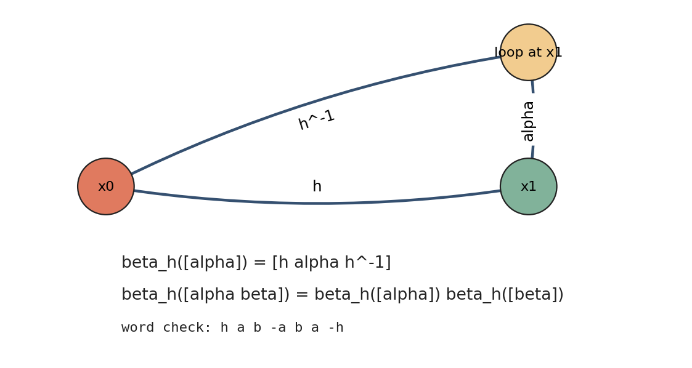
The Circle
Lifting a loop to the real line turns invisible winding into an endpoint displacement.
\(\pi_1(S^1,x_0)\cong \mathbb{Z}\)
The integer is the lifted endpoint after starting the lift at \(0\).
Lift Checks
- Declared windings: \(-1,0,1,2,3\).
- Each lifted endpoint is its winding integer.
- Every sample projects back to the basepoint on \(S^1\).
Maps Induce Homomorphisms
A basepoint-preserving map sends loops to loops and products to products.
\((g\circ f)_*=g_*\circ f_*, \qquad (id_X)_*=id\)
Composition of continuous maps becomes composition of induced group homomorphisms.
Three Consequences
- Degree maps on \(S^1\) multiply degrees.
- \(\pi_1(X\times Y)\) splits into a product.
- A retraction makes the inclusion-induced map injective.
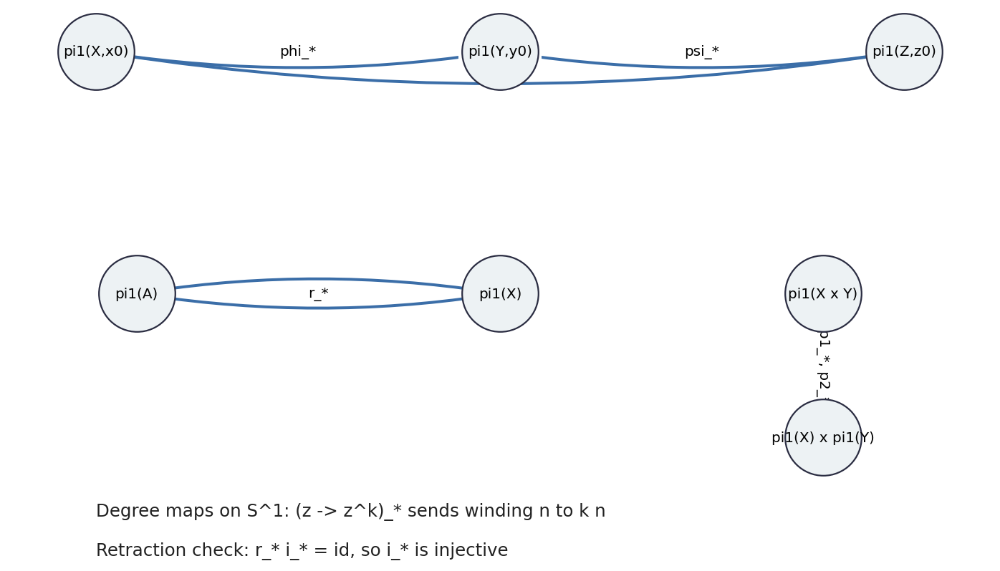
Free Product Words
Reduced words remember piece-by-piece traversal before overlap relations are imposed.
A word in a free product has no adjacent cancellation and no forced commutation between letters from different factors.
Reducer Trace
| read | action | stack |
|---|---|---|
| a | push | a |
| a^-1 | cancel | empty |
| b c c^-1 b^-1 | four-step cancel | empty |
| a d d^-1 b | reduce | a b |
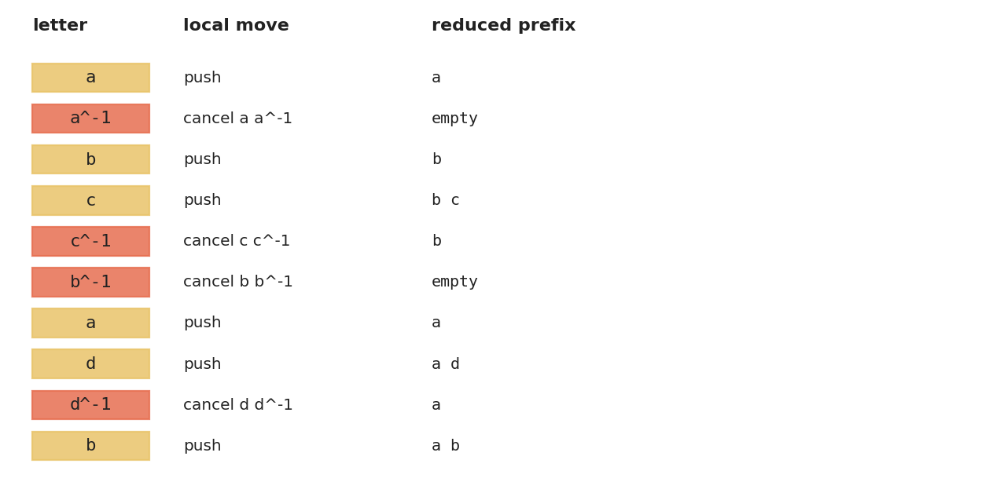
van Kampen Statement
Local fundamental groups assemble by a free product, then overlaps impose normal relations.
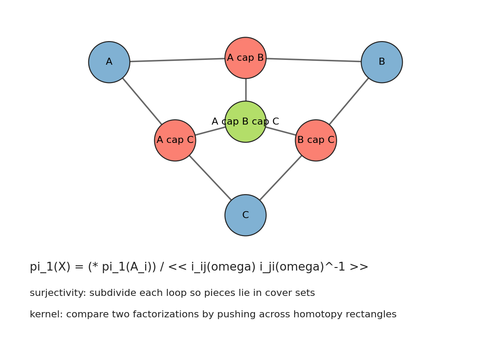
\(\pi_1(X)\cong (\pi_1(U)*\pi_1(V))/N\)
The normal subgroup \(N\) is generated by the differences between the same overlap loop seen in two cover pieces.
Hypotheses Made Visible
- The cover nerve is connected.
- The triple intersection is present in the notebook model.
- The sample relator is \(i_{AB}(\omega)i_{BA}(\omega)^{-1}\).
van Kampen Proof Moves
The proof is a controlled translation from a global loop to local words and overlap relators.
- Subdivide the interval so each segment lands in a cover set.
- Replace each segment by local loop data based at chosen connectors.
- Show different choices differ by conjugates of overlap relators.
Why Normal Closure?
Overlap relations must remain killable after they are moved around the group by arbitrary paths.
Attaching 2-Cells
The boundary word of an attached disk becomes nullhomotopic in the new space.
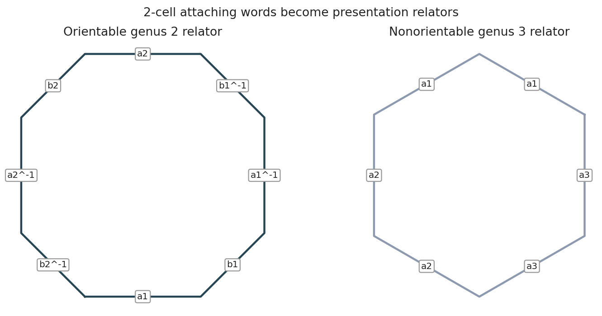
If \(X\) is formed by attaching a 2-cell along a loop \(w\), then \(\pi_1(X)\) quotients by the normal closure of \(w\).
Abelianization Sanity Checks
- Orientable genus 2: free rank \(4\).
- Nonorientable genus 3: free rank \(2\) plus torsion \(\mathbb{Z}/2\).
- Surface words include \([a,b]\), \([a_1,b_1][a_2,b_2]\), and \(a_1^2a_2^2a_3^2\).
Torus-Knot Presentations
A geometric decomposition becomes two generators with one relation.
\(\pi_1(S^3\setminus K_{m,n})=\langle a,b\mid a^m=b^n\rangle\)
For coprime \(m,n\), the notebook examples \(K_{2,3}\) and \(K_{3,4}\) abelianize to free rank \(1\).
Sanity Check
Abelianization collapses the noncommutative presentation to a rank-one abelian group for the coprime examples. This does not identify the full knot group, but it catches the expected first-homology size.
Covering Spaces
A cover looks locally like copies of the base, while global sheet motion stores algebra.
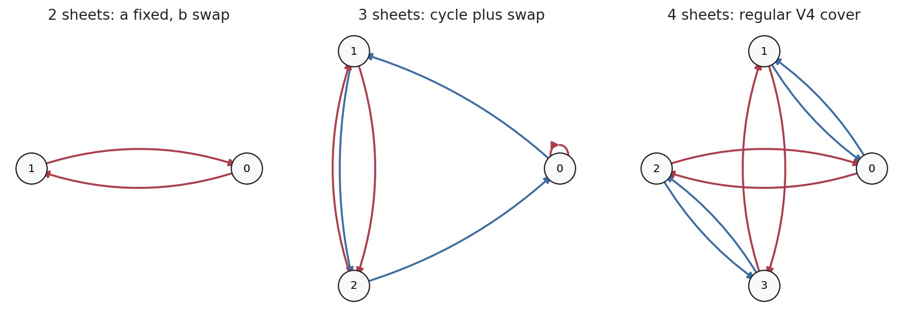
For \(S^1\vee S^1\), a finite cover is encoded by two permutations of a fiber: one for the \(a\)-loop and one for the \(b\)-loop.
Inspection Targets
- Local neighborhoods lift to separate sheets.
- Connected cover means the generated action has one orbit.
- The gallery includes connected 2-, 3-, and 4-sheet examples.
Monodromy
Lifting a based loop permutes the sheets lying over the basepoint.
\(\rho:\pi_1(X,x_0)\to Sym(p^{-1}(x_0))\)
The orbit of one sheet under this action is its connected component in the cover.
Regular Versus Nonnormal
- Regular cover: monodromy order \(4\), deck centralizer order \(4\).
- Nonnormal cover: monodromy order \(6\), deck centralizer order \(1\).
- Both examples are connected because each action is transitive.
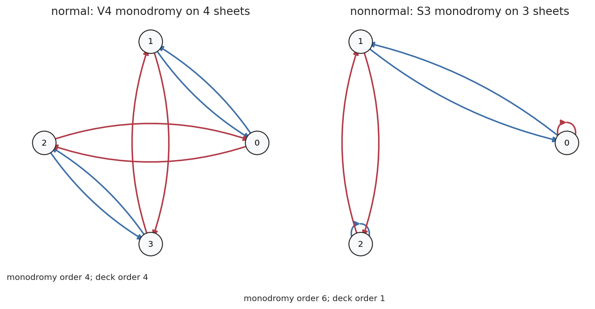
Classification
Connected covers correspond to subgroups of the fundamental group, with arrows reversed.
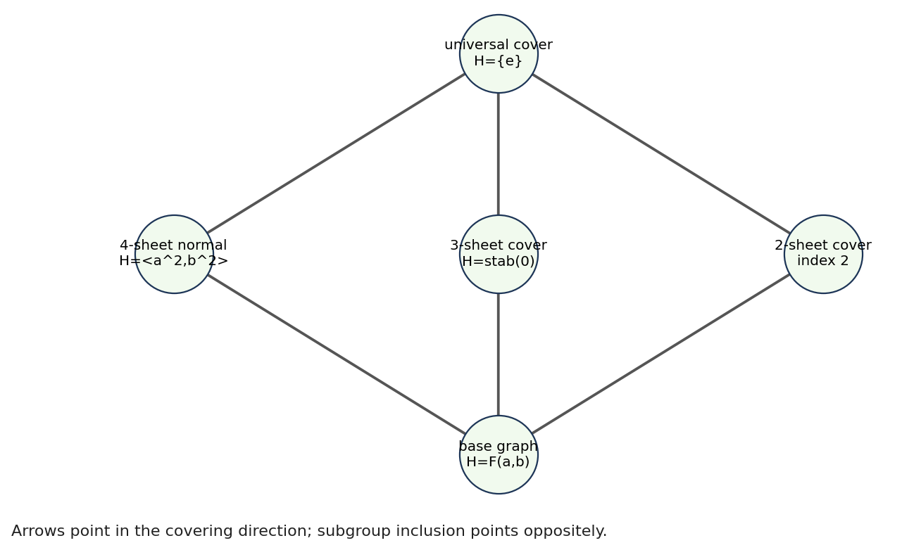
For a suitable connected, locally path-connected, semilocally simply connected space, based connected covers correspond to subgroups \(H\leq \pi_1(X,x_0)\).
Arrow Reversal
A larger cover sits above a smaller cover when its subgroup is smaller. The universal cover corresponds to \(H=\{e\}\).
Deck Transformations
Regularity is the difference between all fibers looking symmetrically alike and only locally alike.
\(Deck(\widetilde X_H/X)\cong N(H)/H\)
A connected cover is regular exactly when \(H\) is normal in \(\pi_1(X,x_0)\).
Notebook Contrast
- Regular example: deck order \(4\).
- Nonnormal example: deck order \(1\).
- The regular deck elements act transitively on the four sheets.
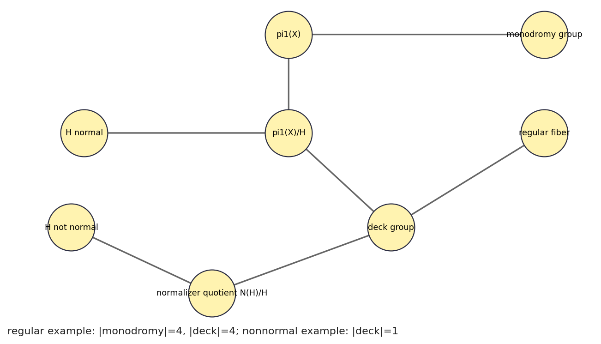
Graphs Are Free
Collapse a maximal tree and keep one generator for each remaining edge.
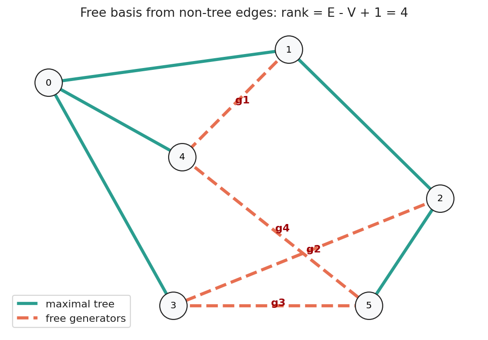
\(rank\,\pi_1(\Gamma)=E-V+1\)
For the notebook graph, \(E=9\), \(V=6\), so the rank is \(4\).
Why The Tree Vanishes
A maximal tree is contractible and contains all vertices. Collapsing it preserves the loop information while turning each chord into a visible loop generator.
K(G,1) And Bass-Serre
When higher homotopy disappears, group splittings become visible in universal covering trees.
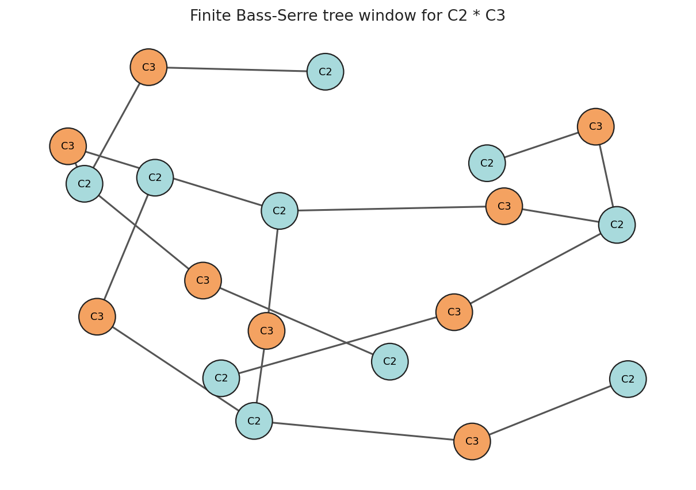
A \(K(G,1)\) has \(\pi_1\cong G\) and \(\pi_n=0\) for \(n>1\). Its universal cover is contractible.
Bass-Serre Bridge
Graphs of groups glue classifying spaces along injective edge maps. The universal cover arranges lifted pieces in a tree-like pattern.
Instructor Exercise: Build A Cover From Permutations
The applied lab asks students to recover connectedness and regularity from two permutations.
Given \(a=[1,2,0,4,3]\) and \(b=[0,3,4,1,2]\) on five sheets, compute the orbit partition and decide whether the connected cover is regular.
Chapter Recap
- Endpoint-fixed homotopy makes loop product well-defined.
- Lifts detect \(\pi_1(S^1)\) by integer endpoints.
- van Kampen turns covers into presentations.
- Covering spaces turn loops into fiber permutations.